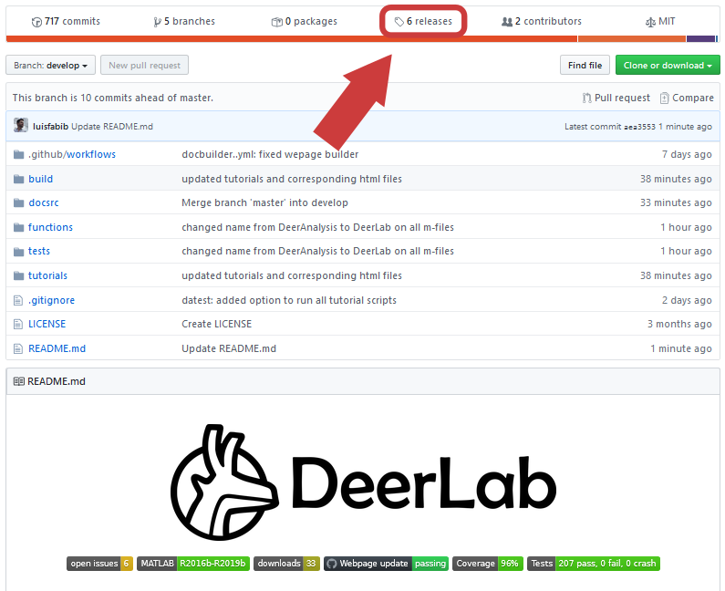
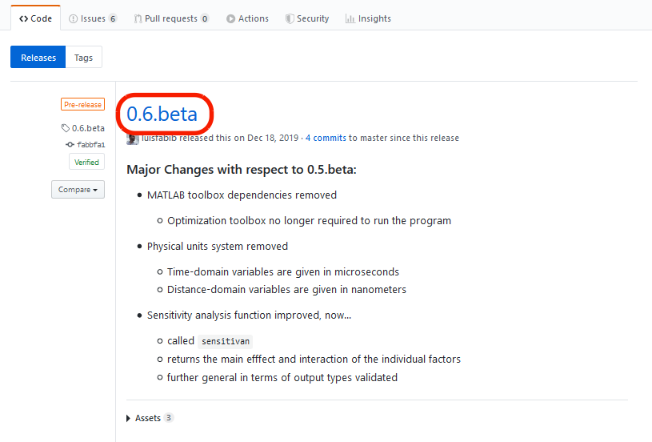
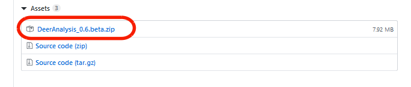
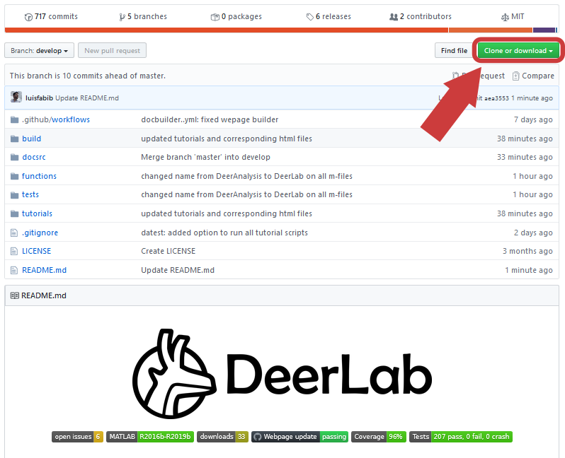

Downloads¶
DeerLab is distributed in two different formats:
- Releases
Releases are the official packages of DeerLab containing the essentials for the full-functionality of the program. They contain:
- All DeerLab functions
- A compiled offline version of this web page and documentation
- All tutorial scripts
- Source code
The source code contains all code used in the development of DeerLab, including:
- All DeerLab functions
- All source files for compiling the web page and documentation
- The full test suite
- All tutorial scripts
- All build and CI scripts
- No built documentation
Downloading Releases¶
All releases (including previous versions) are available in the official DeerLab GitHub repository.
From the main page, select the
releasestabSelect the release you want to download
Download the
DeerLab_x.y.zipfile. Extract the files on your desired location and follow the Installation page instructions.
Downloading the source code¶
The source code is easily available in the official DeerLab GitHub repository either by downloading or cloning the repository.
From the main page, select the
Clone or downloadtab